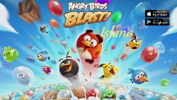

FEITJES OVER CHINESE GAMERS


Bronnen:
Onbekend (2015, 5 mei), MOBILE GAMING IN CHINA- STATISTICS AND TRENDS, https://www.go-globe.com/blog/mobile-gaming-china/, geraadpleegd op 14 juni 2018.
NIEUWE GAME: ANGRY BIRDS BLAST ISLAND
Angry Birds Blast Island
Angry Birds Blast Island is nú gratis te verkrijgen in de google play store en de app store. Bij angry birds moet je vogels afschieten op varkens met een katapult om je gestolen eieren terug te krijgen! Iedereen heeft dit spel al, dus wacht niet langer en download het! In deze versie kan je delen welke levels je al hebt gedaan met de speciale share-knop. Het spel is nu exclusief te verkrijgen in China, met wel 345 levels, wat er nog heel veel meer worden! Als het spel uit is, kan je dus opscheppen tegen iedereen hoever je al bent! Dus download hem gauw!
BATTLEFIELD 4 VERBANNEN
Dit is een boodschap van de Chinese overheid:
Battlefield 4 is nu verbannen, omdat deze game het image van China zwart maakt en een aanval is op de nationale veiligheid. Verwijder alle Battlefield 4-gerelateerde bestanden en gooi alle merchandise weg. Wie dit niet doet kan een fikse bekeuring verwachten.